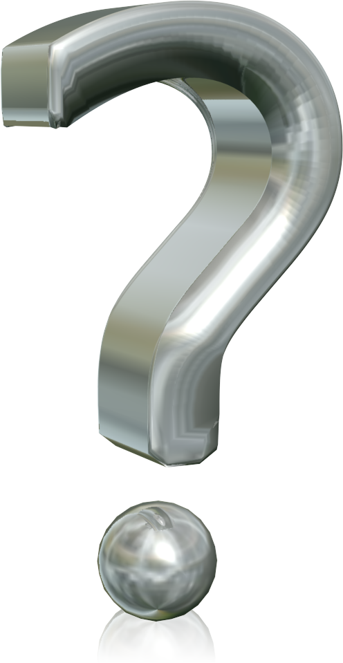

Women & Mozilla
Les femmes dans le logiciel libre et Mozilla
Créer par Manel Rhaiem / @manelbutterfly
Au niveau d'éducation
Les femmes obtiennent, en général, de meilleures notes que les hommes
Dans le domaine de l'IT

Logiciel Libre
Dans les communautés Open Source
Women & MOzillien "Womoz"
Comment Contribuer ?
Contribuer dans Womoz
- localisation
- Design
- Documentation
- Marketing...
Qu'est ce qui a ammené les femmes impliquées
- être sociale
- si vous voulez que les femmes viennent, leur faire sentir qu'on attend
- améliorer leurs connaissances
- T-shirt...,
Clever Quotes
These guys come in two forms, inline:
“The nice thing about standards is that there are so many to choose from”
and block:
“For years there has been a theory that millions of monkeys typing at random on millions of typewriters would reproduce the entire works of Shakespeare. The Internet has proven this theory to be untrue.”
Pretty Code
function linkify( selector ) {
if( supports3DTransforms ) {
var nodes = document.querySelectorAll( selector );
for( var i = 0, len = nodes.length; i < len; i++ ) {
var node = nodes[i];
if( !node.className ) ) {
node.className += ' roll';
}
};
}
}
Courtesy of highlight.js.
Intergalactic Interconnections
You can link between slides internally, like this.
Fragmented Views
Hit the next arrow...
... to step through ...
any type- of view
- fragments
Fragment Styles
There's a few styles of fragments, like:
grow
shrink
roll-in
fade-out
highlight-red
highlight-green
highlight-blue
Spectacular image!

Export to PDF
Presentations can be exported to PDF, below is an example that's been uploaded to SlideShare.
Take a Moment
Press b or period on your keyboard to enter the 'paused' mode. This mode is helpful when you want to take distracting slides off the screen during a presentation.